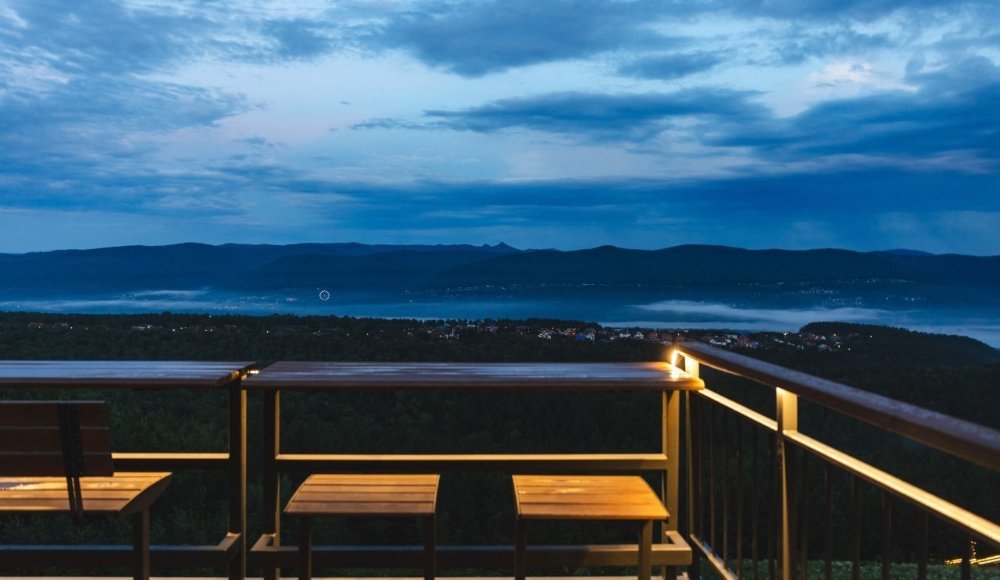
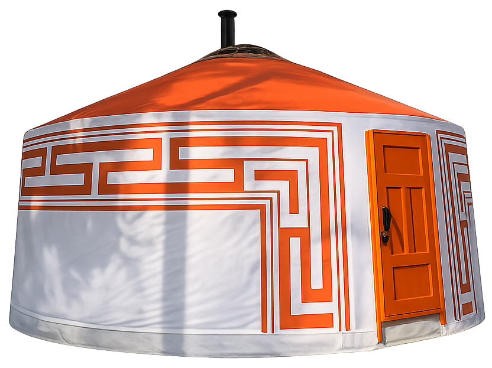
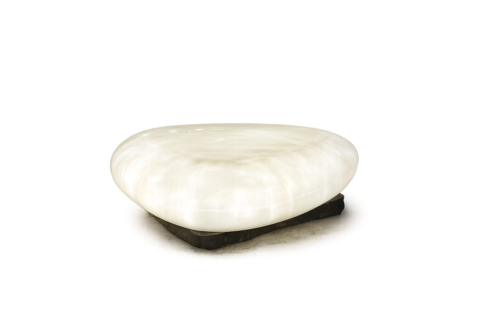
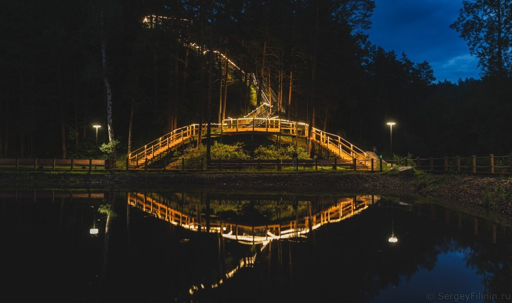
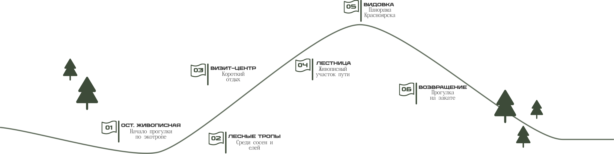

НИКОЛАЕВСКАЯ СОПКА
Город, Енисей и горы открываются здесь одним панорамным кадром.

Уютная долина среди леса, где можно провести
несколько часов на природе, не покидая город.
Пространство среди лесных троп, смотровых площадок и живописных маршрутов с видами на Красноярские окрестности.

СЕРЕБРЯНИКОВСКАЯ ВИДОВКА

Познакомьтесь с культурой народов региона через интерактивные экскурсии в традиционных жилищах — чуме и юрте. Здесь рассказывают о быте народов Красноярского края, Хакасии и Тывы, а также проводят мастер-классы.

Познакомьтесь с культурой народов региона через интерактивные экскурсии в традиционных жилищах — чуме и юрте. Здесь рассказывают о быте народов Красноярского края, Хакасии и Тывы, а также проводят мастер-классы.

Прогулка среди сосен, смотровых площадок и
лесных троп.

Откройте другие знаковые места Красноярска,
которые находятся рядом.
Город, Енисей и горы открываются здесь одним панорамным кадром.

Один из крупнейших экопарков России с десятками маршрутов для прогулок, спорта и походов.

Уютная долина в лесу рядом с Плодово‑Ягодной станцией - здесь легко забыть, что ты всё ещё в Красноярске.
Всё необходимое, чтобы легко добраться и насладиться видами
Серебряного ЛогаДо визит-центра можно доехать через район Удачный. В конце маршрута вас будет ждать круглосуточная парковка
До остановки «Живописная» ходит маршрут № 12. Далее — подъём по лестнице через Удачный к маршруту.
Отдохните перед прогулкой: здесь можно согреться, перекусить в кафе, посетить библиотеку и узнать больше о маршрутах экопарка
Ежедневно: 09:00–21:00